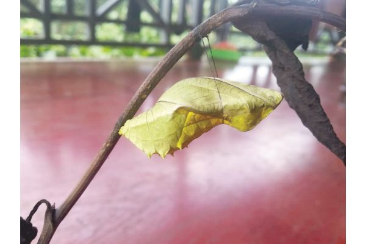
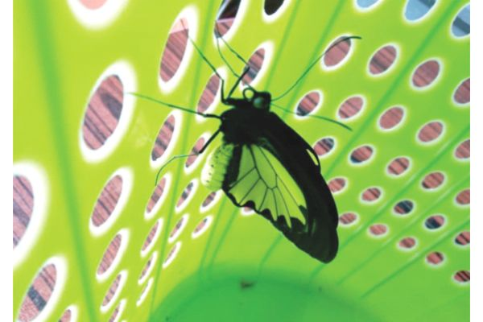
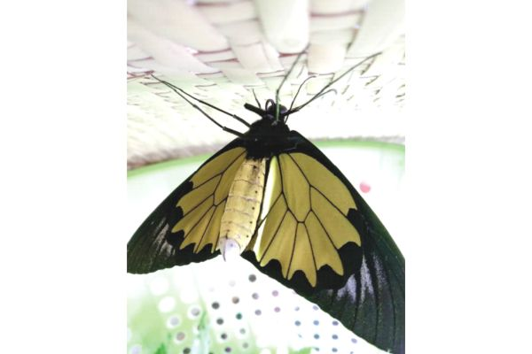
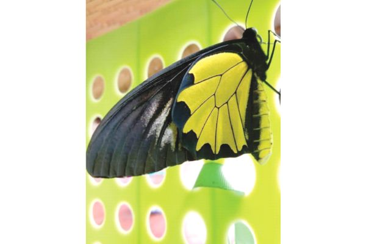
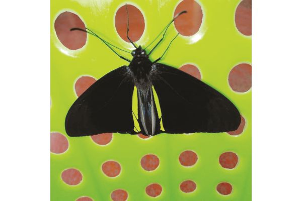

November 7, 2023. February 7, 2021 by Stephen Sutton
The pupa of a Kinabalu Birdwing. (photo credit: Paul Foronda)
BUTTERFLIES are interesting creatures which go quite deep into the human mind as to the subconscious.
According to Garden with Wings, these nectar-feeding insect, are deep and powerful representations of life.
Butterflies are not only beautiful, but also have mystery, symbolism and meaning and are a metaphor representing spiritual rebirth, transformation, change, hope and life.
The magnificent, yet short life of the butterfly closely mirrors the process of spiritual transformation and serves to remind us that life is short.
These often polymorphic insects has also been used by American professional boxer, Muhammad Ali, in his famous catchphrase “Float like a butterfly, sting like a bee. Rumble, young man, rumble” in 1964 before his fight with Sonny Liston.
Famous American singer and songwriter Mariah Carey also released a song titled “Butterfly” in 1997. In the lyrics, Carey sings to someone, tell them to spread their wings and fly away into the world on their own, like a butterfly.
Fellow of the Royal Entomological Society (UK), Dr Stephen Sutton, said:
“When we talk about someone being a butterfly and that they can’t settle to a particular thing, we see them the butterflies flying and jumping from one place to another and we sort of say that well that’s rather like some kind of human behaviour.”
Butterflies, he said, are rather romantic and very beautiful.
Sutton who has been an invertebrate ecologist, specialising since 1980 in auditing the biodiversity of tropical forest insects said as far as conservation is concerned, butterflies are part of the forest ecosystem or the grassland ecosystem.
“They are just part of the whole complex which relies on each different part to function properly.
“If you take out parts of it, you are losing some of your natural heritage or losing some of the functioning of that system and you may for example, butterflies pollinate flowers and pollination is absolutely central to those flowers continuing generate to another.
“Bees pollinate flowers, birds pollinate flowers but pollination is a key process in nature which binds together the plants and animals. So that is very important,” he said.
From the tourists’ point of view, he said butterflies are interesting because they are ecologically very important and diverse.
“In many countries there are lots of individuals of many more species. I don’t find that in Borneo. Don’t usually see masses of butterflies. In Africa you do.
“Butterflies are a natural thing for tourists to want to see, but that is rather more difficult than just coming here, you have to fly in places where the butterflies are really happy and abundant,” he said.
He noted that many types of agriculture don’t really suit butterflies. “So you get very few species and very few individuals of those species.”
“For the tourism side, it would be finding the places where the butterflies are flourishing and then getting the tourists there and then having the people who are trained enough to know what species are they and explain what are they all doing and why they are interested,” he said.
At the moment, Sutton and his team are working on an interesting proposal with his Information Technology colleague in Kuala Lumpur for a British Council grant for a digital promo on the threat of climate change, with augmented reality and other information technology bells and whistles.
“We’re setting it in the context of working with the Homestays in Kg Kiau to breed the Kinabalu Birdwing butterfly.
“This is threatened if the climate gets too hot (it needs cool, wet climate). We are trying to introduce the Birdwing as in icon representing the potential plight of the montane forest-adapted insects of Borneo.
“Almost all Borneo’s mountains top out below 2,000m so nowhere upwards for montane insects to go if temperature rises too much,” he said.
“After weeks of looking at an old map of Borneo I realised that it was telling me something special. Borneo’s mountain mass has practically nothing significant above 2,000m except Mt K, Tambyukon, Trus Madi, Mulu, Dulit, Murud and that’s about it. More rolling hills than towering peaks,” he added.
The Kinabalu Birdwing butterfly is an insect giant (up to 19cm wingspan), is the equal largest butterfly in Borneo (with Rajah Brooke’s Birdwing) and is one of the biggest anywhere. Unlike the Rajah it occurs nowhere else in the world.
The Kinabalu Birdwing is “sexually dimorphic”, meaning male and female can be easily distinguished by their differing size and colouration.
Unlike the four other Borneo Birdwings, the females have white forewings with a black band on the edge of their wing. The males possess black forewings and on the underside a number of white “arrowheads”.
Both sexes have yellow and black hind wings. The hind wings of the male a glorious golden colour with black dots along the border. The female hindwings are predominantly black with a patch of yellow at the base.
This birdwing is difficult to observe in its natural environment, as a result of its precipitous lower montane forest habitat and its canopy flying habits.
Most sightings are in gardens where it wanders in search of nectar from flower like Poinsettia, Hibiscus and Balsam. Even where it is well established it is rare to see more than three or four in a day.
“The only big population we know of is in Kinabalu National Park and the remaining (and threatened) forest just outside the Park. There are relict populations on Mount Trus Madi and in the Crocker Range at Gunung Alab (stretching down to the Mahua Waterfall near Tambunan – this is a good place to see it).
“Old specimens in museums show it was much more widely distributed in Sabah formerly. It is absolutely dependent on a food plant which only grows in dense old-growth forest, mostly between 1,000m and 2,000m altitude,” said Sutton.
“This butterfly is famous around the world as one of the legendary birdwing butterflies of Southeast Asia. These created great excitement amongst the first Western explorers.
“Curiously, it has been completely ‘under the radar’ in Sabah, its only home. It is an unvalued gem of Sabah’s natural heritage and deserves to be made an icon to save it.
“Naturalists travel from afar to see Birdwings in Australia and Papua New Guinea. They would do so here if they knew about it and could guarantee to see it,” he said.
Sadly, it is noted that the destruction of the Kinabalu Birdwing butterfly habitat is occurring on an alarming scale.
The primary threats are deforestation caused by the pressure from the increasing human population and climate change.
“It is saddening to see this graceful butterfly slowly disappearing from some of its localities surrounding Mount Kinabalu,” said Sutton.
He said conservation is held up because there is no information on its ecology and breeding biology. For example, the host plant, thought to be an Aristolochia species, has not been properly confirmed to this day.
“The same goes for its exact distribution, since many mountainous areas in Sabah remain unsampled for this species,” he said.
Meanwhile, photos furnished by Paul Foronda of the Rotary Club of Kota Kinabalu (RCKK) showed how the Kinabalu Birdwing Butterfly larvae morphed into a striking butterfly.
“Saiheng, one of our Bird and Butterfly Trainee manage to breed the Kinabalu Birdwing Butterfly from larvae, pupae and finally metamorphosed into an adult male butterfly,” said Foronda.
Here is the rest of the interview:
DE: How many butterfly species are there in Sabah?
Sutton: There are about 1,000 butterfly species in Sabah.
DE: How many are rare to Sabah?
Sutton: Very, very few species are really rare if you look in the right habitat. Maybe only five per cent. Many species spend most of the time in the forest canopy, so appear rarely at ground level.
In open habitats most butterflies occur only as strays and appear to be rare.
In the habitats to which they are adapted, (usually forest), butterflies are quite plentiful but very well dispersed.
On a morning’s walk through a forest you might see three or four individuals of each of 20 different species. The next morning you might see the same number, but half the species will be different.
The surprise is that exhaustive observation over a whole year might reveal 300 resident species. This is in rich lowland forest like Danum Valley.
In montane forest such as around Mount Kinabalu there would be fewer species but each one might be commoner.
DE: How many are toxic?
Sutton: Approximately five per cent i.e. 50 species. There is an energy-cost synthesising toxic chemicals, so it is not a ‘free lunch’ option.
A smart move adopted by many toxic species is to sequester (take up) toxic chemicals from the food plant and protect oneself with these.
These snag is to protect your own tissues from being poisoned. Most plants are non-toxic so you are limiting your food options is you choose a toxic one.
DE: In what environment do butterflies flourish most in Sabah?
Sutton: The forest for sure. Lepidopterists will tell you that if you clear all the forest you will lose almost all butterflies. But even in cities like KK there are some specialists of open landscapes, eve built-up ones.
DE: What’s the life span for Sabah butterflies?
Sutton: The big birdwings, as adults, live for between one month to three months, perhaps six months exceptionally. But most butterflies live only a few days or weeks. That is the physiological life span. Actual life span is usually cut short by predation.
DE: How long does it take for Sabah butterflies to undergo full metamorphosis from egg to adult?
Sutton: This will depend on size.
DE: Is there a difference between butterflies and moths in Sabah?
Sutton: Butterflies have thread-thin antennae ending in a swelling or an actual knob. At rest they fold their wings vertically. They are brightly coloured and fly by day.
Moths fly by night and have tapered antennae thinnest at the end. Their colouration is geared to blending in with a background (like tree bark) to camouflage themselves against predators like birds hunting by day, when they are literally ‘sitting targets’.
Exceptions to the rule are day-flying moths, which are brightly coloured.
DE: Why do most butterflies have brightly coloured wings?
Sutton: To attract mates. Colours are species -specific to avoid mating with the wrong species.
DE: What’s the wingspan measurement for the biggest and smallest butterflies found in Sabah?
Sutton: I measured 185mm (18.5cm) for females of both the Kinabalu or Borneo Birdwing (Triodes Andromache) and Rajah Brooke’s Birdwing (Trogonoptera brookiana), making them among the largest butterflies in the world.
But most are smaller. Some males of the Kinabalu Birdwing are only half the size of biggest females but still manage to mate with them. Size doesn’t seem to matter.
The smallest butterfly is Zizina otis (Lesser Grass Blue). Wingspan 15mm (1.5cm). This is actually abundant along mown grass verges in Kota Kinabalu, as it feeds on a minute clover which survives close mowing.
DE: Do you think there enough butterfly conservation practices in Sabah?
Sutton: No, but it could be worse. The key is the policy of keeping a large part of the forest estate as natural woodland which is not disturbed too often.
A 30-year harvesting cycle of selective logging so that a closed canopy was achieved would work for most butterflies.
DE: What roles do you think Sabahans can do to help butterflies flourish in Sabah?
Sutton: Nourish their forest! Learn about their beautiful and diverse butterflies. Become aware of the threat of drying out and fire due to climate change and express concern to decision-makers. Boost sustainable tourism.
This will provide tangible benefit from nourishing the forest. Campaign for nature, on which ultimately mankind relies.
Kinabalu Birdwing Butterfly, an insect giant which can grow up to 19cm wingspan (photo credit: Paul Foronda)
Adult male Kinabalu Birdwing Butterfly. (photo credit: Paul Foronda)
Kinabalu Birdwing, a graceful butterfly slowly disappearing from some of its localities surrounding Mount Kinabalu (photo credit: Paul Foronda)
Kinabalu Birdwing Butterfly, an unvalued gem of Sabah’s natural heritage and deserves to be made an icon to save it. (Photo Credit: Paul Foronda)
Dr Sutton (left), Foronda (centre) and Sabah Parks official-cum-bird researcher, Alim Biun (right).